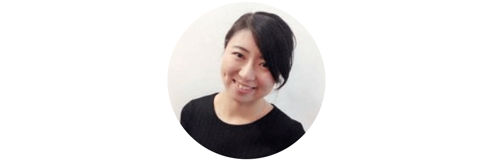
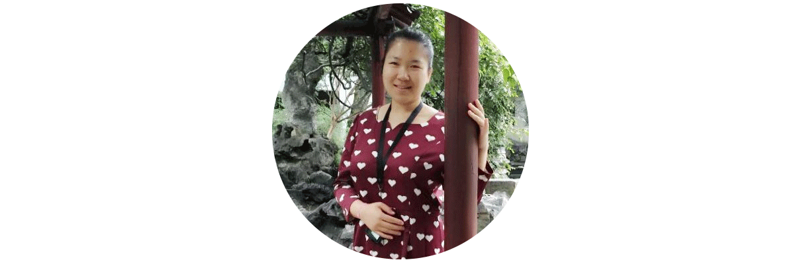
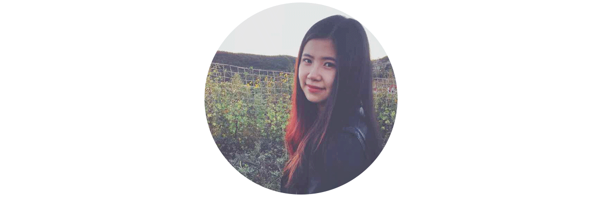

雨霫
“自闭症儿童摄影计划” 发起人及总负责人
毕业于美国University of New Hampshire化学系，及中南民族大学材料化学系。
“中澳千禧计划” 2015中方青年代表，美丽中国(Teach for China) 梦想导师。
目前在一边做创新科技咨询，一边做纳米材料与可持续建筑的跨界。
徐赫
“自闭症儿童摄影计划” 展览负责人
毕业于伦敦大学学院公众考古学系，及吉林大学博物馆学专业。
曾策划赴墨西哥巴洛克艺术博物馆-中国大帆船与墨西哥巴洛克艺术展，赴马来西亚- 颐和园珍宝展，赴卡塔尔伊斯兰艺术博物馆文物展览等。接触自闭症孩子一年多，曾策划《错位》、《许愿森林》两场自闭症儿童画展。目前供职于中国文物交流中心展览处。

刘媛
“自闭症儿童摄影计划” 公共传播负责人
毕业于伦敦政经学院社会政策系，及北京大学社会学系。
关注公益事业，关注儿童成长。

邢羽思
“自闭症儿童摄影计划” 公共传播负责人
毕业于美国华盛顿大学公共管理学院，及广东外语外贸大学西班牙语系。
TED死忠粉，始终相信世界是美好的。
邮箱：contact@autismphotographer.org
微博：@自闭症儿童摄影计划
微信公众号: 自闭症儿童摄影计划 (autism_photographer)